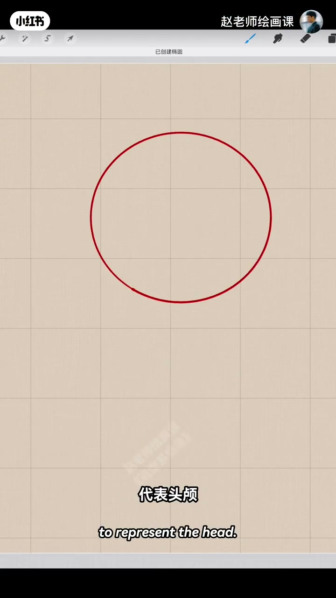
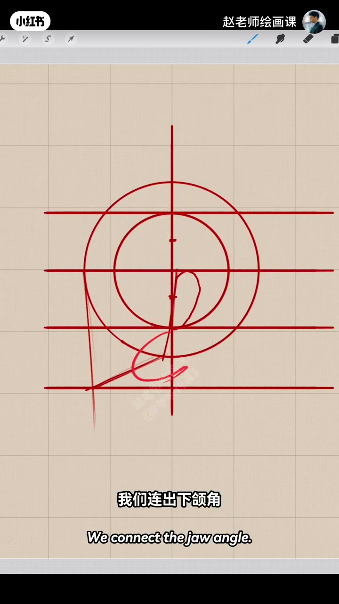
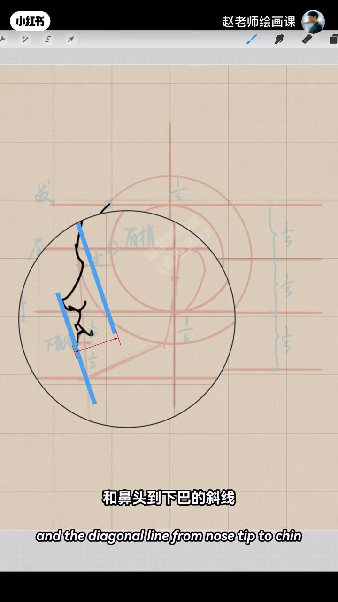
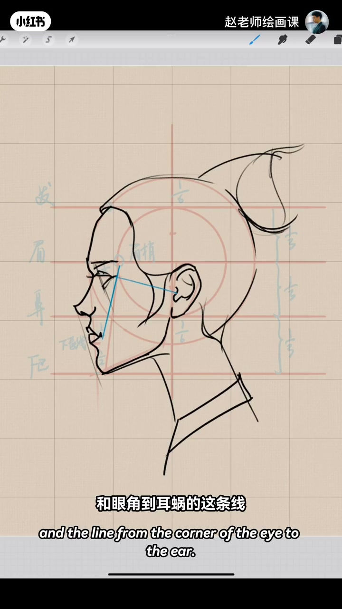

内容要点
五官再好整体仍难看，往往是侧面头部比例没弄清。示范：大圆代表头颅，过圆心作垂直线；小圆直径约占大圆六分之四，等距分上中下三庭。从眉弓往下收出脸部外轮廓（平视略往里收、非垂直），耳在中庭，连出下颌角。眼在中庭四分之一、下唇线在下庭二分之一；侧面眼斜与鼻头到下巴斜线基本平行。最后用眼角—嘴角线与眼角—耳蜗线互相垂直定宽，耳垂中线定脖子方向与粗细。
知识结构
大圆＋小圆六分之四→三庭；下颌角收口。
中庭1/4眼、下庭1/2下唇；眼斜∥鼻下巴斜。
眼嘴线⊥眼耳线定宽；耳垂中线定颈。
侧面先立圆与三庭，再钉五官位点与两条垂直校验线——比例对了，五官才坐得住。
00:00-00:46侧面比例：大圆小圆到下颌角
开场点题：五官画得再好整体仍一眼难看，是因为没弄清头部比例。侧面先画大圆代表头颅，穿过圆心找两条垂直线；再画小圆，直径约占大圆六分之四，用小圆等间距分出上中下三庭。
从眉弓往下找出脸部外轮廓：平视角度下这条线稍微往里收，并不是垂直的。耳朵位于中庭；大圆相交处连出下颌角，侧面头部比例就基本完成。00:12／00:42 是脚手架现场。


00:46-01:20眼嘴位点与侧面形
眼睛在中庭的四分之一处；嘴则以下庭二分之一处为下唇线。默写侧面时注意：侧面眼睛也是倾斜趋势，和鼻头到下巴的斜线基本平行；眉毛略高于眉弓，眉梢在小圆最宽处。
还要留意侧面眼睛形状，从发际线带出头发与耳朵基本结构。01:05 默写段把平行关系画出来。

01:20-02:02头发厚度、颈肩与垂直校验
鬓角头发也是好看形状；头发有厚度，要略大于那个圆形，可安排丸子头并让形状更漂亮。脖子和肩膀方向要准确。
关键校验：眼角与嘴角的连线，和眼角到耳蜗的线，两者是垂直线——帮助确定眼睛和嘴的宽度。脖子方向与粗细可根据耳垂引出的中线来定。学会了就动笔试试。01:45 蓝线标出眼—耳关系。

完整转录（56段）
以下文本由 Whisper medium 模型自动转录，可能存在少量识别误差，已尽可能修正。
为什么五官画得再好
整体还是一眼难尽
因为你没有弄清楚头部的比例关系
在侧面的角度下
我们可以先画一个圆
代表头颅
穿过圆芯
找两条垂直线
再画一个小圆
这个小圆直径占大圆的六分之四
通过小圆等间距分出上中下三亭
现在从眉弓开始
我们往下找出脸部的轮廓
这条线在平视的角度下
是稍微往里收的
并不是垂直的
耳朵位于中庭
这条线也是有斜度的
和大圆相交的位置
我们连出下颌角
一个侧面的头部比例就基本完成了
对了
眼睛的位置也很简单
在中庭的四分之一处
那嘴呢
下庭的二分之一处
是下唇线
现在我们来试试
默写一个侧面的头像
这里注意啊
侧面的眼睛也是一个倾斜的趋势
和鼻头到下巴的斜线
基本是平行的
眉毛要略高于眉弓
眉梢在小圆最宽处的点位
注意侧面眼睛的形状
从发界线带出头发
还有耳朵的基本结构
并角的头发
也是一个很好看的形状
头发因为是有厚度的
所以要略大于这个圆形
我们安排一个丸子头怎么样
丸子的形状
我们让它再漂亮一点
脖子和肩膀的方向要准确
这里注意啊
眼角和嘴角的连线
和眼角到耳窝的这条线
两者是垂直线
它可以帮助我们
很好的确定眼睛和嘴的宽度
脖子的方向和粗细
可以根据耳垂引出的这条中线来定
你学会了吗
那就动笔试试吧